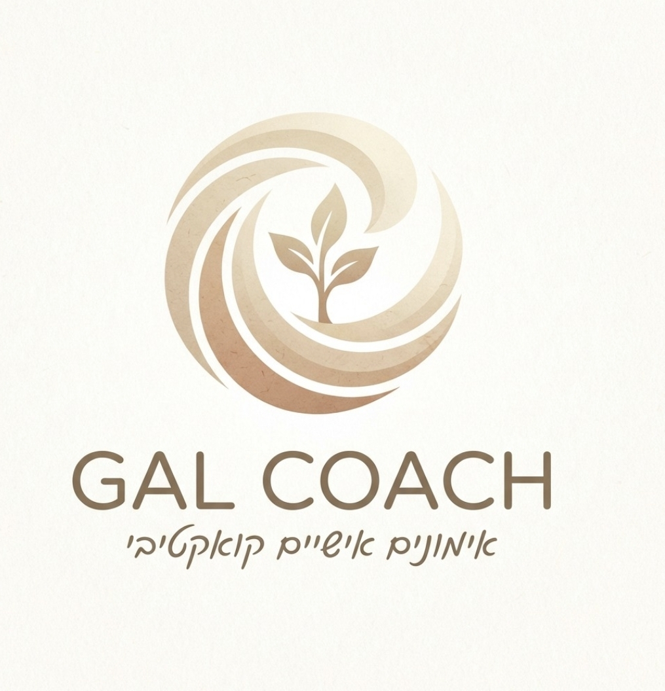

תרגיל קצר של 3–4 דקות שיעזור לך לזהות איפה מתח, עומס או חרדה פוגשים אותך בגוף — ואיזה קול פנימי אולי עומד מאחוריהם.
זה לא אבחון ולא טיפול — רק רגע קצר של הקשבה למה שקורה בפנים.
לפעמים זה מופיע כלסת נעולה, שינה קלה, לחץ בחזה, אבן בבטן, נשימה קצרה, כתפיים מכווצות או מחשבות שלא עוצרות. לא תמיד נקרא לזה חרדה — לפעמים זה פשוט הגוף שמאותת שמשהו בפנים מבקש תשומת לב.
כשאנחנו מקשיבים לתחושה הגופנית, אנחנו יכולים להתחקות אחריה ולמצוא את הקול הפנימי שמפעיל אותה. הקול הזה לא תמיד "אנחנו" — לעיתים הוא מנגנון הגנה שנוצר בשלב כלשהו בחיים, כדי למנוע מאיתנו כאב.
התרגיל הבא מזמין אותך לרגע של התבוננות אישית ראשונית — ללא שיפוט, ללא מסקנות, רק הקשבה.
בחר/י את המקום שהכי קרוב למה שאת/ה חווה. לא צריך לדייק — רק לשים לב איפה הגוף מאותת.
לפי התשובות שלך אפשר להתחיל לזהות איזה קול פנימי מופיע כשמתח, עומס או תחושה גופנית לא נרגעים.
התוצאה שלך תישלח אליך בוואטסאפ עם הסבר קצר על הקול שעלה בתרגיל.
אפשר גם לבדוק יחד איך עובדים עם הקול הזה בתהליך אימון אישי או קבוצתי.
שליחת הודעה לגל בוואטסאפמתח, עומס או חרדה מופיעים לעיתים קרובות קודם בגוף — ורק לאחר מכן הופכים למחשבה מודעת. כשמזהים את התחושה הגופנית, אפשר להתחיל לשאול: מה הקול שמאחוריה?
הקול הפנימי שעלה בתרגיל לא בהכרח אומר אמת — לעיתים הוא מנגנון הגנה שהתגבש בשלב מוקדם בחיים, ומנסה למנוע חוויות כואבות כמו:
ההכרה שהקול הזה הוא לא "אני", אלא חלק שמגן עליך — היא לעיתים הצעד הראשון לשינוי אמיתי.